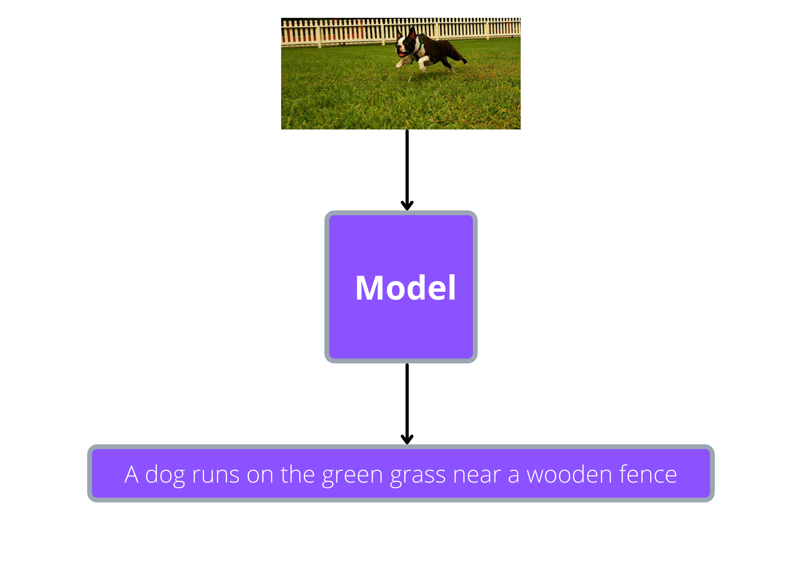
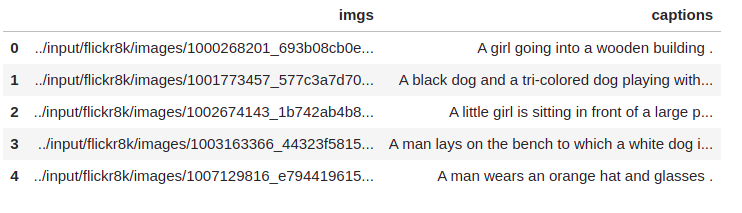

Image captioning¶
This will be bit more interesting than the previous chapters which dealt with single modality, i.e, text. Here we will deal with images as well as text. The model we are going to built will be able generate a caption given an image as input,
Dataset¶
We will be using the flickr8k image captioning dataset which contain images as well 5 captions corresponding to a single image. The raw dataset has an images folder which contain all the images and a captions.txt file which has the captions corresponding to each image in the images folder. Here is a sample from captions.txt:
As you can see, we have the name of the image name and caption(caption_text). Each image has more than one caption, so there is caption_number to indicate the number of the caption. From the above captions, we will use the captions with caption_number equal to 1.
Preparing the data¶
First let’s write some code to create a dataframe which will contain a column for images and another column for captions, as shown below:
Let’s create an empty dataframe and lists required to store our image files and captions:
import pandas as pd
from pathlib import Path
# create an empty dataframe with 'imgs' column
df = pd.DataFrame(columns=['imgs'])
# we will store the image files and captions here before putting it into dataframe
imgs, captions = [], []
# directory where the dataset is present
root_dir = Path("../input/flickr8k")
Now let’s read the contents of captions.txt:
# get the contents of 'captions.txt' file
with open(root_dir/"captions.txt", "r") as f:
content = f.readlines()
Finally, we will loop through each line in captions.txt and extract the image path and the caption with caption_number equal to 1:
for line in content:
line = line.strip().split("|")
# check if the caption_number is equal to 1
if line[1]=='1':
# store the image path
imgs.append(root_dir/"images"/line[0])
# store the caption
captions.append(line[-1])
Now, let’s store our image paths and captions on to the dataframe we created:
df.loc[:, 'imgs'] = imgs
df.loc[:, 'captions'] = captions
In our previous chapters, we solved text-to-text problems like summarization and translation, where we used an encoder-decoder type model. But there, both the inputs and outputs were text. Unlike those chapters, here the input is image and output is text. So we will use AutoFeatureExtractor from transformers library to preprocessing the input images and AutoTokenizer for preprocessing the output text.
The tokenizer we load using AutoTokenizer will process the text and prepare it in a format which can be directly fed to the model. Similarly, AutoFeatureExtractor will process the image and prepare it in a format which can be directly fed to the vision model.
We will load the feature extractor for our images from vision transformer checkpoint and the tokenizer from gpt2 checkpoint:
from transformers import AutoFeatureExtractor, AutoTokenizer
encoder_checkpoint = "google/vit-base-patch16-224-in21k"
decoder_checkpoint = "gpt2"
feature_extractor = AutoFeatureExtractor.from_pretrained(encoder_checkpoint)
tokenizer = AutoTokenizer.from_pretrained(decoder_checkpoint)